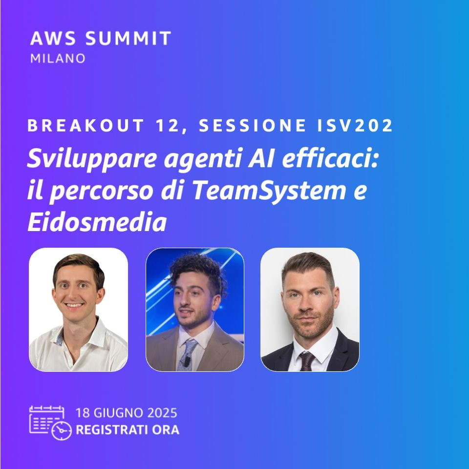
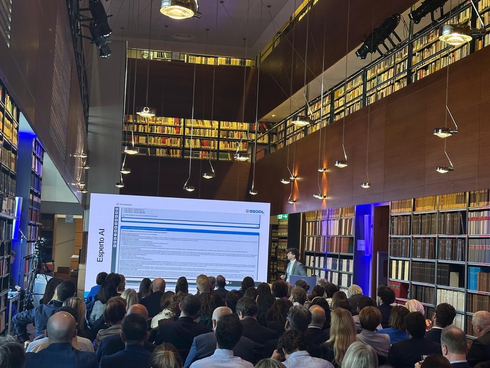

AI Forward Deployed Engineer · Rome, Italy · Open to relocation
I build the systems around the model that make AI agents reliable in production.
Agent harness engineering, multi-agent orchestration, evaluation, persistent memory, document intelligence, and deterministic reasoning for enterprise workflows.
About
From model capability to dependable product behavior.
I work where software engineering, model behavior, customer workflows, and product judgment meet. At TeamSystem, I lead an AI acceleration team that operates like an internal startup: discover a real need, build the system, validate it with domain experts, and move it into production.
I have built with LangChain since its early 0.x era in 2023, helped take an enterprise legal AI product from beta in 2024 to commercial launch in 2025, and then expanded into LangGraph-based harnesses, persistent memory, Vision LLM pipelines, tool-calling agents, and knowledge-graph reasoning.
What I engineer
The production layer around advanced models.
My strongest work is not a single prompt or agent. It is the harness that gives models state, tools, memory, quality controls, and a path to improve.
Agent Harness Engineering
State graphs, routing, tool selection, execution environments, artifact lifecycles, retries, recovery, and explicit control boundaries.
Evals & Deterministic Verification
Failure-mode analysis, domain-grounded evaluation criteria, quality gates, structured checks, and reproducible technical artifacts.
Memory & Context Systems
Persistent semantic, episodic, factual, and preference memory with classification, versioning, history, retrieval, and governance.
Retrieval & Document Intelligence
Enterprise RAG, hybrid retrieval, Vision LLM extraction, semantic layers, vector databases, and structured data products.
Knowledge-Graph Reasoning
Computational graphs that turn domain rules and relationships into auditable reasoning paths rather than opaque model guesses.
Forward-Deployed Product Engineering
Working directly with technical users and domain experts, moving fluidly from discovery and prototyping to debugging and production adoption.
Selected enterprise work
Systems built for real workflows, not controlled demos.
Proprietary work is described at a non-confidential architectural level.
Production-grade Multi-Domain Agent Harness
A reusable first-party harness for generating and managing complex artifacts across legal, construction, procurement, and accounting workflows.
System design
LangGraph state graph, stateful tool routing, layered QA, quality gates, deterministic verification, artifact lifecycle management, and a code-execution environment synchronized with AWS S3.
Why it matters
The system avoids a proliferation of domain-specific prompts and vertically isolated agents. The same harness can support multiple product domains while preserving explicit controls and verification.
LangGraphState graphsTool callingCode executionQuality gatesAWS S3
Enterprise Legal Assistant
A production RAG and agent platform for legal professionals, developed from the early LangChain 0.x era and scaled over millions of legal documents.
Lifecycle
Architecture and primary implementation, beta in 2024, commercial launch in 2025, product roadmap, production operation, and direct iteration with lawyers and compliance professionals.
Engineering focus
RAG over 3–4 million vectorized documents, ReAct and tool-calling workflows, failure-mode analysis, evaluation criteria, document management, and compliance automation.
LangChainRAGOpenSearchReActEnterprise scaleLegal AI
Enterprise Agentic Memory Layer
A shared memory capability for persistent cross-session context across products and agents.
Memory model
Semantic, episodic, factual, and preference memories classified as first-class units, versioned and historicized inside the platform orchestrator.
Product direction
Designed as a reusable platform capability rather than memory embedded inside a single assistant, with attention to contracts, ownership, retrieval, and evolution.
Mem0Long-term memoryOrchestrationVersioningCross-product context
Document Intelligence Hub
A centralized ingestion layer that converts complex enterprise documents into reusable structured data products.
Inputs
Tax and fiscal forms, engineering bills of quantities, delivery notes, invoices, and other documents with complex layouts and domain-specific structure.
Downstream value
Vision LLM extraction and normalization feed agentic querying, retrieval, analytics, and product workflows without rebuilding ingestion per use case.
Vision LLMsStructured extractionData productsDocument pipelines
Computational Knowledge Graph for Fiscal Compliance
A reasoning backbone for accounting and fiscal workflows where answers must be explainable, auditable, and reproducible.
Architecture
The model queries a computational graph of domain entities, rules, and relationships, then constructs the response from the graph-derived reasoning path.
Quality model
Domain logic remains inspectable and testable, reducing reliance on implicit model knowledge for high-consequence compliance answers.
Knowledge graphsGraph reasoningAuditabilityComplianceDeterministic checks
Data, Office, and Construction Agents
Agentic systems embedded where professionals already work: enterprise data, Microsoft Word, and engineering-document workflows.
Examples
A natural-language data agent over a Databricks semantic layer; a tool-calling Word integration for drafting and revision; and entity extraction and retrieval for construction documents.
Product principle
Reduce workflow switching. The agent should operate through governed tools and existing product surfaces, not force users into a disconnected chat experience.
DatabricksSemantic layerMicrosoft WordEntity extractionWorkflow integration
Open source
Building and improving the infrastructure agents depend on.
My public work focuses on persistent context, MCP, tool compatibility, model-provider correctness, and production failure modes.
CreatorPython · Neo4j · MCP
MCP Neural Memory
A persistent knowledge-graph memory server for AI coding agents. It tracks goals, constraints, strategies, outcomes, preferences, and semantic links to project code.
- Graph-aware retrieval and active context injection
- Outcome tracking for successful and failed strategies
- Published as
kg-mcpwith setup tooling
CreatorPython · Neo4j · MCP
MCP Doc Builder
An MCP server for intelligently crawling technical documentation and exposing it through hybrid search and a dynamically extracted ontology.
- LLM-guided crawling and content selection
- Vector, full-text, and graph retrieval
- Concept and relationship extraction
MergedMem0 · PR #5547
GPT-5 parameter compatibility across providers
Fixed request construction for GPT-5-family models by selecting max_completion_tokens across the shared base layer and provider-specific paths.
- Cross-provider, non-breaking implementation
- Regression tests for GPT-5 and legacy models
- Validated against a live Azure deployment
MergedMem0 · PR #5731
Safe Azure message rewriting
Stopped Azure providers from mutating caller-owned messages, corrupting user text, and crashing on multimodal message content.
- Deep-copy boundary for provider workarounds
- String and multimodal regression coverage
- Preserved existing content-filter behavior
MergedMemPalace · PR #1717
Anthropic-compatible MCP tool schemas
Removed an invalid top-level schema combinator that caused Anthropic-backed MCP sessions to reject the entire tools array.
- Preserved handler-level validation
- Added a repository-wide schema regression test
- Restored compatibility without weakening behavior
MergedMirage · PR #209
Consistent uniq semantics across virtual filesystems
Centralized parsing of -f, -s, and -w in Mirage's generic uniq implementation, preserving the distinction between an unset option and the literal value 0.
- Applied across generic-backed connectors including S3, Databricks, Drive, Redis, SSH, and local resources
- Added regression coverage for parsing and GNU-compatible behavior
- Merged after maintainer review with all checks passing
Engineering investigationOpenCode
Fork-aware agent cost accounting
Traced duplicated API cost attribution through cloned session parts and proposed tested fixes for session totals and per-model statistics.
- Root-cause analysis across session and projector layers
- Targeted tests and monorepo type-checking
- PRs later closed by automated repository cleanup, not merged
Engineering principles
How I approach agent systems.
- 01
Harness before prompt sprawl
Control flow, state, tools, and verification should be explicit system concerns—not hidden inside ever-larger prompts.
- 02
Evals are a product interface
Customer failures must become reproducible cases, measurable criteria, and durable improvements that survive the original incident.
- 03
Memory is governed state
Persistent context needs identity, provenance, versioning, deletion, retrieval policy, and clear ownership—not just a vector-store write.
- 04
Determinism belongs around the model
Probabilistic generation can be bounded by schemas, executable checks, graph-derived rules, and verification layers.
- 05
Build with the domain, not near it
Lawyers, compliance officers, engineers, and customers expose the failure modes that internal AI teams otherwise miss.
Talks, media & recognition
Production AI shared with engineers, lawyers, and business leaders.
Selected public appearances and awards with direct evidence links.
Agentic systems in enterprise production
Shared the stage with AWS and Eidosmedia for session ISV202 on practical agent-system implementation with Amazon Bedrock, presenting TeamSystem's Legal AI use cases built with services including Textract and OpenSearch Serverless.

Talk To The Future — AI for legal professionals
Presented the new TeamSystem Legal AI capabilities to the Milan legal community, covering practical adoption, professional productivity, data security, and privacy.

Enterprise AI and the evolution of legal work
A one-to-one conversation with Andrea Cabrini on the practical impact of generative AI and how intelligent systems are entering professional legal workflows.
Generative AI, contracts, and legal design
Panel contributor to the roundtable “Contrattualistica: tra digital transformation, intelligenza artificiale generativa e legal design,” moderated by Andrea Cabrini, Director of Class CNBC.
International AI innovation hackathon
Part of the seven-person winning team in a 130-participant international challenge backed by AWS, Microsoft, and Google. Built an LLM-first document-intelligence system for procurement workflows, combining conversational search, dynamic structuring, and self-generated extraction prompts. The first-place prize was an award week hosted at Google in San Francisco in 2026.
Additional engineering awards
Innovation prize in 2023, 3rd place at an AWS DevOps hackathon in Tirana in 2024, and 2nd place with the highest-ranked AI project at a 120+ participant conference hackathon.
Experience
A progression from software systems to AI product leadership.
2025 — Present
AI Engineer — Acceleration Initiatives Lead
TeamSystem · Leading a four-engineer fast-track AI team and building reusable platform capabilities.
2023 — 2025
Tech Lead & Product Owner — Legal, Construction & Procurement
TeamSystem · Enterprise RAG, autonomous agents, customer evaluation, product architecture, and domain delivery.
2020 — 2023
Scrum Master & Software Engineer
TeamSystem · AWS applications, multi-tenant data architectures, early ML systems, ISO 27001, and European engineering teams.
2019 — 2020
Full-Stack Developer
Netlex · PHP, MySQL, JavaScript, and legal software products.
Contact
Let’s build AI systems that keep working after the demo.
I am based in Rome and open to relocation for high-impact AI engineering and deployed engineering roles.